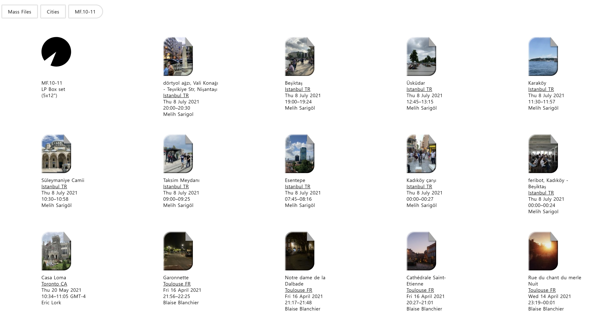
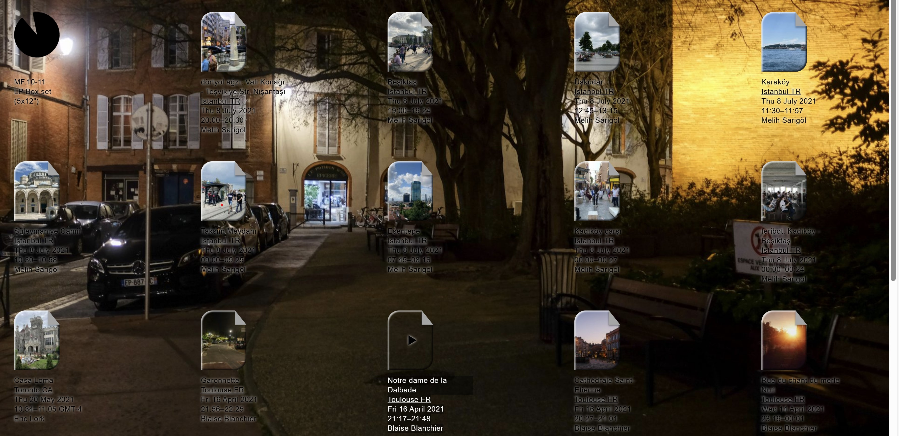
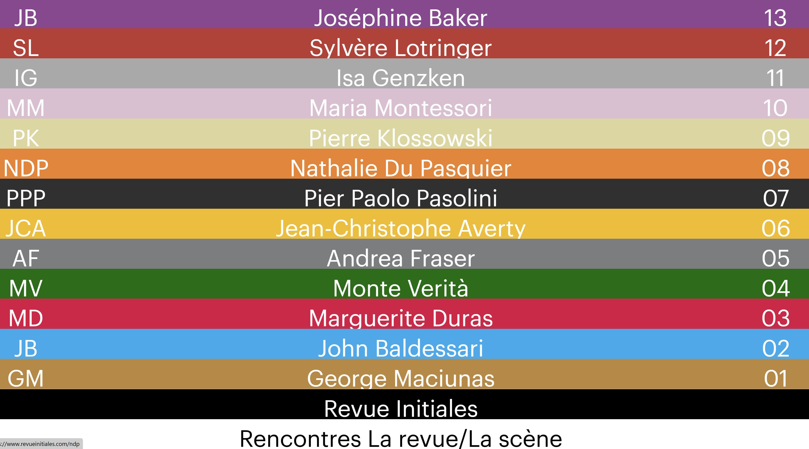
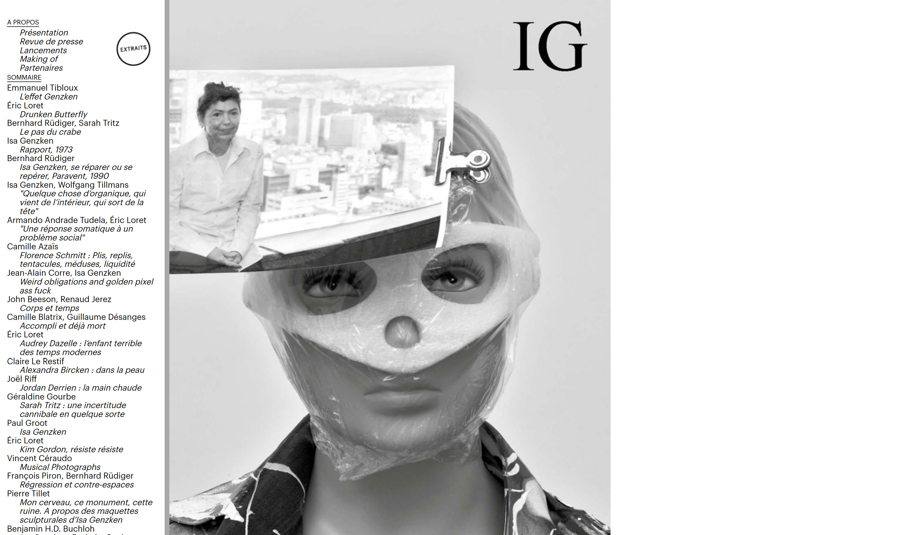
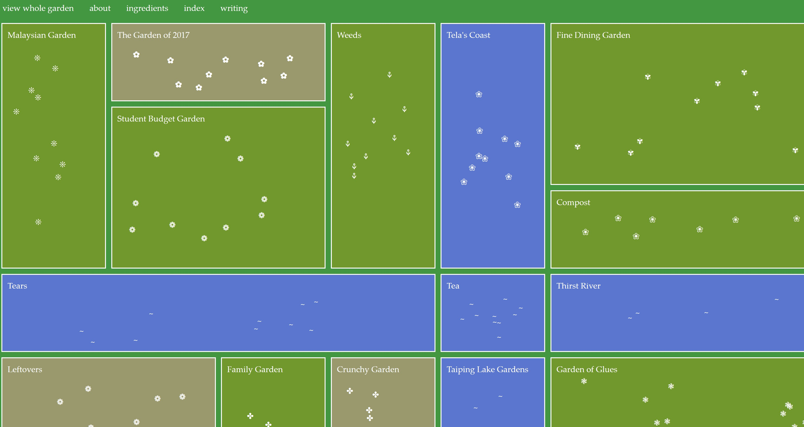
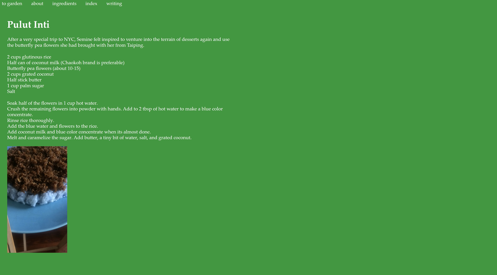

Mass Files
세계 여러 곳곳에서 자신들의 일상을 영상으로 모아둔 사이트이다. 파일 형식으로 여러 개가 나열이 되어있다. 맨 밑으로 가면 27개의 목록들이 있어 쉽게 찾아볼 수 있다.
이미지 간에 공간이 넓어서 보기가 좋다. 이미지의 크기가 크지 않아서 헷갈리지 않는다.흰 바탕에 사진들의 대비로 눈에 잘 띈다.
어디서 몇 시, 몇 분에 했는지 보여줘서 그 공간의 생생함이 잘 느껴진다. 사이트는 전체적으로 검은색과 흰색의 조합으로 구성을 하였다.
모바일에서는 파일들이 2개로 배치되며 폰 화면에 알맞은 크기가 된다. 우측 상단에는 이 웹사이트가 무슨 의미인지 설명을 해준다. 버튼들을 누르면 각각의 배경들이 바뀌면서 눈에 더 잘 들어오게 해준다.
하지만 사진의 크기가 가로로 되어 있어 컴터로 보았을 때보다는 보기에는 다소 어려운 점이 있다.
Revueinitiales
들어가면 색상별로 다른 나라 사람들의 이름이 나열되어 있다. 특이하게 위에서부터 읽는 것이 아니라 밑에서 위로 가는 방향으로 읽도록 되어있다.
이름을 누르면 그 사람의 사진이 나온다. 흰색의 글자라 눈에 더 잘 들어온다. 잘 보면 파일이 끼워져있는 듯한 이미지를 연상하게 해준다.
왼쪽 상단의 화살표를 누르면 화면이 왼쪽에서 오른쪽으로 나오며 해석이 나온다.
모바일에서는 글자가 작아지면서 끼워져있는 느낌이 아닌 일반적인 나열 형식으로 되어있다.
컴퓨터에서 보는 것보다 모바일에서의 화면이 글자 간의 공간이 넓어져서 훨씬 더 눈에 안정감을 준다.
Gardenblue
정원을 컨셉으로 하여 초록색으로 전체적인 구성이 되어있다. 중간에 4개로 나누기 위해서 물을 표현한 목록도 포함되어 있다. 목록마다 각각 다른 꽃들로 구성이 되어있다. 꽃을 누르면 설명을 볼 수 있도록 되어있다.
학생 정원, 가족 정원 등의 여러 정원들이 있다. 왼쪽 상단에 있는 것들을 눌러보면 축소해서 정원을 한눈에 볼 수가 있다.
이 사이트에 대해서도 설명이 나와있다. 목록들의 사이 간격이 넓은 편은 아니지만 약간의 공간을 줘서 더 정원 같은 분위기를 연상시킨다.
모바일에서는 화면이 스크롤이 아니라 오른쪽으로 옮겨서 봐야 하는 사이트라서 화면에 전체적으로 보이지는 않는다.
상단에 목록들이 고정되어 있어서 바로바로 넘어갈 수가 있어서 좋다. 글자 크기 자체가 원래 작아서 모바일에서 봤을 때의 크기가 가장 적당하다.